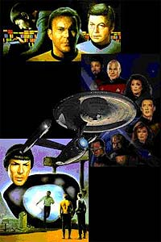
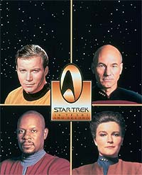
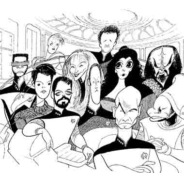
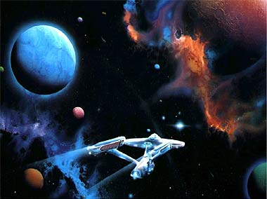

|
por Gustavo Leo
 Bom,
essa a ltima coluna minha aqui não Trek Brasilis por
uns tempos. Com o fim de Voyager (que nas mos pouco
talentosas do pseudo-produtor Ken Biller mais parece um suicdio
do que uma morte honrosa num franchise moribundo) e a longa gestaco
de uma nova Série e um novo filme (que estão demorando mais pra
nascer que beb de elefante em um parto bem complicado e cheio de
mentiras e non-sequiturs do produtor Rick "Give Me The Money"
Berman) está na hora de Gustavo Leo, o algoz dos trekkies,
tirar umas bem merecidas frias de Jornada nas Estrelas.
(Sem dvida, certas pessoas estão respirando aliviadas agora.) Bom,
essa a ltima coluna minha aqui não Trek Brasilis por
uns tempos. Com o fim de Voyager (que nas mos pouco
talentosas do pseudo-produtor Ken Biller mais parece um suicdio
do que uma morte honrosa num franchise moribundo) e a longa gestaco
de uma nova Série e um novo filme (que estão demorando mais pra
nascer que beb de elefante em um parto bem complicado e cheio de
mentiras e non-sequiturs do produtor Rick "Give Me The Money"
Berman) está na hora de Gustavo Leo, o algoz dos trekkies,
tirar umas bem merecidas frias de Jornada nas Estrelas.
(Sem dvida, certas pessoas estão respirando aliviadas agora.)
 Adorei
o Trek Brasilis e gostei da resposta que a minha coluna
teve em diversas reas, desde entre os meus amigos pessoais do
news da UOL (leitores assduos deste site, o primeiro nacional no
mesmo nvel de um TrekWeb ou
TrekToday) até gente que
antes me criticava como pseudo-intelectual alienado (bom, talvez
eles ainda me achem de pseudo-intelectual alienado, mas pelo menos
nao me chamam mais de trekkie...).
Fiz na pessoa do Salvador Nogueira um bom amigo, e amigos meus at
chegaram a conhec-lo pessoalmente e, para meu desespero, falaram
que ele ainda mais jovem do que eu, que tenho s 30 aninhos.
Como algum to jovem pode ser to bom não que faz e to
imparcial e perspicaz não seu trabalho? A minha amizade com o
Salvador foi a melhor coisa que nasceu da coluna "Nas Garras
do Leo", e acho ele a primeira pessoa realmente inteligente
e com senso crtico jornalstico com relao a Jornada nas
Estrelas e seus bastidores e politicagens que conheci não fandom
nacional.
Ele falou que Jornada ia renascer das cinzas na mdia brasileira
e aconteceu. Ele foi o primeiro a ver de forma oficial os erros
cometidos nas dublagens e a politicagem trekkie na empresa VTI-Rio
e acredito que isso foi um dos fatores na melhoria da qualidade da
dublagem e principalmente da tradução de Jornada no Brasil
(apesar de ser totalmente contra tal procedimentos em canais de TV
a cabo e totalmente a favor da legendagem, como até a Fox est
adotando, sou obrigado a admitir que a tradução e a dublagem da
empresa do sr. Barbera melhorou --um pouco). Foi o Salvador que
mostrou que não preciso ser um fundamentalista trekkie e dono
de f-clube para dominar o assunto (e acima de tudo --informar!)
Como Kirk e sua tripulao em Jornada III e IV,
voc nao precisa usar uniforme para ser um bom "capito",
"almirante", o diabo. Parabns pra ele.
Muitos não deram ouvidos para mim por que nunca fui muito diplomtico
(e Jornada nunca foi um plo de socializao na minha
vida), mas muito deram ouvidos para ele, do bom e do ruim, e se Jornada
e seu fandom mudaram no Brasil, grande parte fruto de esforos
de gente como o Salvador. E nos ele: olhe por a e descubra
gente como o ex-editor da "Sci-Fi News" Paulo Maffia (a
verdadeira alma daquela revista --esperamos que ela se recupere da
perda), Srgio Figueredo e seus colegas na Abril, meus colegas do
news da UOL e os colunistas desse site --todos mostraram a muita
gente (dos "big shots" do USA Network e da Globosaté a
mim mesmo) que admiradores de Jornada e cultura pop e
sci-fi norte americana não tm de ser um bando de nerds
destrambelhados que s se renem em centro de convenes para
trocar bottons. De Jornada, lgico.
 E
por falar em Jornada, a está o motivo de minhas frias.
Cansei da Série. Ela j cumpriu o que podia na minha vida por
enquanto. Ela j me deu mais de 700 horas de divertimento
(dependendo do episódio, claro) e inmeras boas horas de
leitura, mas tudo tem limite e o atual regime e a criatividade da
Série não estão me dando mais, com o perdo da expresso, teso.
Jornada X ser timo? não sei, mas acho que no. A nova
Série valer a pena, sendo ou não uma pr-seqncia?
Sinceramente, vindo da mente de Brannon Braga, nem não sculo 69
(não bom sentido) ele far alguma coisa que preste. Ele não ouviu
as palavras de Michael Piller em sua entrevista
ao Trek Brasilis --então para que perder nosso tempo com
ele?
Continuarei como co-editor do TrekWeb provavelmente até a estria
de Jornada X, pois devo muito a Steve Krutzler, o maior
nome fora do franchise nos EUA e um sujeito que me abriu muitas
portas l fora (dentro e fora do espao virtual da net) e a quem
devo muito. Por isso, "Nas Garras do Leo" entra agora
em hibernao e Gustavo Leo vai guardar suas fitas e livros e
curtir um pouco mais sua vida. Ele j tem 30 anos e vai fazer 31
em breve, entao mal d tempo de ele (com seus dois empregos, um
em Bhá e outro em Braslia) ainda arranjar tempo para assistir TV
(e d-lhe Buffy, Angel, Farscape e tudo de bom e criativo que
produzido hoje em dia em Hollywood e que não tem o nome de
Brannon Braga e Rick Berman nos crditos. Saudades da profunda e
enigmtica Deep Space Nine e da verdadeira e utpica A
Nova Gerao, aquela que existia antes da militarista
Enterprise-E, quandos seus personagens ainda tinham o esprito da
serie na sua Galaxy Class Enterprise-D. E, lgico, de Kirk,
Spock e McCoy, os melhores cowboys da fronteira do espao
sideral).

Vou para as minhas montanhas mineiras, respirar o ar puro. Ainda
apareo de vez em quando não Frum e não news, afinal fiz amigos
aqui e l. engraado, eu acho, mas as coisas mudam. Jornada
nas Estrelas no Brasil está em boas mos na mdia,
finalmente. O fandom está menos alienado. O Trek Brasilis
lanou no Brasil o jornalismo srio (que j está sendo copiado
por outros sites brasileiros, graas a Deus) que o TrekWeb e o
TrekToday j faziam há tanto tempo l fora e que faltava em
nossa terra. J nos EUA, cruzem os dedos. Se algum como um novo
Nicholas Meyer e um novo Gene Coon surgir e colocar Jornada
não topo de novo, eu deso das montanhas e fao uma continuao
dessa coluna. Mantenha os dedos cruzados --ou no.

|